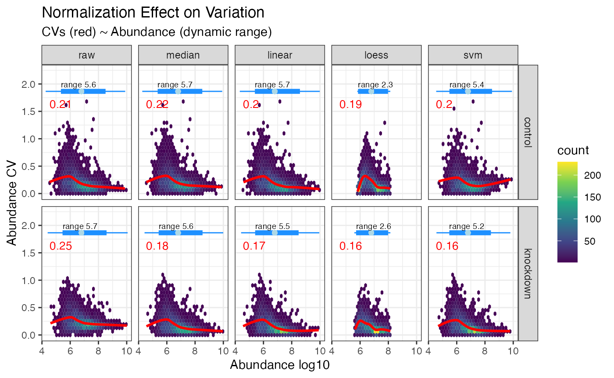

Normalizing
normalizing.RmdQuantitative proteomics relies on accurate normalization, for which
several choices are available, yet remain somewhat difficult to
accurately implement or require formatting data differently for each.
For example, a simple alignment of measured median’s requires only a few
lines of code, while implementing normalization from the
limma package requires non-intuitive
formatting of the data. The normalize() function is
designed as a wrapper to handle various methods of normalization all at
once, then allowing researchers the ability to examine the result and
choose the method best suited for their analysis. Alternatively, the
select_normalization() function can automatically select
the best normalization based on a weighted score combining CVs, dynamic
range and variability in the first three PCA components, or the user can
override this selection manually. The values from the selected
normalization are then use for all downstream plots and analyses such as
expression() and enrichment().
Normalization in tidyproteomics attempts to apply each function
universally, meaning the same towards peptide and protein values. To do
this each data-object contains a variable called the
identifier , this tells the underlying helper functions
what values in the quantitative table “identify” the thing being
measured.
#>
#> Attaching package: 'tidyproteomics'
#> The following objects are masked from 'package:base':
#>
#> expression, merge, subset
#> ── Attaching packages ─────────────────────────────────────── tidyverse 1.3.2 ──
#> ✔ ggplot2 3.4.2 ✔ purrr 1.0.0
#> ✔ tibble 3.1.8 ✔ dplyr 1.0.10
#> ✔ tidyr 1.2.1 ✔ stringr 1.5.0
#> ✔ readr 2.1.3 ✔ forcats 0.5.2
#> ── Conflicts ────────────────────────────────────────── tidyverse_conflicts() ──
#> ✖ ggplot2::annotate() masks tidyproteomics::annotate()
#> ✖ dplyr::collapse() masks tidyproteomics::collapse()
#> ✖ tidyr::extract() masks tidyproteomics::extract()
#> ✖ dplyr::filter() masks stats::filter()
#> ✖ dplyr::lag() masks stats::lag()Proteins have a single identifier …
hela_proteins$identifier
#> [1] "protein"
hela_proteins$quantitative %>% head()
#> # A tibble: 6 × 5
#> sample_id sample replicate protein abundance_raw
#> <chr> <chr> <chr> <chr> <dbl>
#> 1 e9b20ea7 control 1 Q15149 1011259992.
#> 2 ef79cc4c control 2 Q15149 1093277593.
#> 3 eebba67b control 3 Q15149 980809516.
#> 4 ebf4b0fe knockdown 1 Q15149 1410445367.
#> 5 ea36dac9 knockdown 2 Q15149 1072305561.
#> 6 ecfd1822 knockdown 3 Q15149 1486561518.Peptides have multiple identifiers …
hela_peptides$identifier
#> [1] "protein" "peptide" "modifications"
hela_peptides$quantitative %>% head()
#> # A tibble: 6 × 7
#> sample_id sample replicate protein peptide modificati…¹ abund…²
#> <chr> <chr> <chr> <chr> <chr> <chr> <dbl>
#> 1 aaf7e768 control 1 P06576 IPSAVGYQPTLATDMGTMQER NA 4.32e7
#> 2 aaf7e768 control 1 P06576 IPSAVGYQPTLATDMGTMQER 1xOxidation… 1.47e6
#> 3 aaf7e768 control 1 Q9P2E9 LTAEFEEAQTSACR 1xCarbamido… 5.90e6
#> 4 aaf7e768 control 1 P11021 ITPSYVAFTPEGER NA 5.29e7
#> 5 aaf7e768 control 1 P11021 IINEPTAAAIAYGLDK NA 2.45e8
#> 6 aaf7e768 control 1 Q9P2E9 LLATEQEDAAVAK NA 5.83e6
#> # … with abbreviated variable names ¹modifications, ²abundance_rawNormalization Functions
Normalization currently supports the methods described below.
Benchmark timing was accomplished on an M1 MacBook Pro (macOS Ventura 13.3 22E252). Parallel processing for both
randomforestandsvmare accomplished usingmclapplyfrom the R parallel package.
| Method | Description | Timing |
|---|---|---|
| scaled | values are aligned medians and dynamic ranges to adjusted to be similar | 0.3 sec |
| median | values are simply aligned to the same median value | 0.3 sec |
| linear | a linear regression is applied to each data set according to individual analyte means | 0.2 sec |
| limma | wrapper to the limma package | 0.4 sec |
| loess | a non-linear loess (quantile) regression applied to each data set according to individual analyte means | 1.3 sec |
| svm | a non-linear regression (support vector machine) applied to each data set according to individual analyte means. This implementation utilizes eps-regression from the e1071 package and tuning of the gama and cost parameters. |
5min & 52.1 sec 2min & 26.5 sec (4 cores) |
| randomforest | a non-linear random forest regression applied to each data set according to individual analyte means. |
37.8 sec 14.0 sec (4 cores) |
Normalization of the whole proteome
# path_to_package_data() loads data specific to this package
# for your project load local data
# example:
# your_proteins <- "./data/your_exported_results.xlsx" %>%
# import("ProteomeDiscoverer", "proteins")
rdata <- hela_proteins %>% normalize(.method = c("scaled", "median", "linear", "loess", "randomforest"))Visualizing
Plotting the overall variation and dynamic range. It is easy to reduce variability simply by squashing the dynamic range - plotting that here can ensure that does not happen. Keep in mind that the overall dynamic range for several mis-aligned sets will be smaller when properly normalized - often median normalization has an immediate impact on the CVs and is the least rigorous. Note here the dramatic reduction in CVs randomforest yielded while also maintaining the overall dynamic range.


Effect of Normalization on Dynamic Range
The effect randomforest has on the data is most noticable at the lower dynamic range, as seen in the plot below where the CVs for values under 10^6 in abundance have been dramatically reduced. If you are hunting for low abundant biomarkers, this method is highly recomended.
hela_proteins %>%
normalize(.method = c('median', 'randomforest')) %>%
plot_dynamic_range()Normalization based on a subset
In addition to proteome wide normalization, a subset can be used as
the basis for normalization, such as the case for spike-in quantitative
analytes or the perhaps the bait protein in an immunoprecipitation
experiment. This is accomplished with the same semantic syntax as with
the subset() function and is reflected in the recorded
operations. Be aware that using a regression from a smaller dynamic
range than the full proteome may not predict well beyond the limts of
the subset.
NOTE: while linear and svm can predict beyond the training set limits, loess can not.
NOTE: The randomforest normalization method, as implemented, requires the the prediction set size to match the training test size, and therefore is only applicable to normalization of the whole proteome. The limma normalization method also does not accept a subset for normalization. Both of these methods will be skipped if a subset is implemented.
rdata <- hela_proteins %>%
normalize(description %like% 'ribosome',
.method = c('median', 'linear', 'loess', 'svm'))
rdata %>% plot_variation_cv()
rdata %>% plot_dynamic_range()
rdata %>% operations()
#> ℹ Data Transformations
#> • Data files (p97KD_HCT116_proteins.xlsx) were imported as proteins from
#> ProteomeDiscoverer
#>
#> • Data reassigned sample to control where 'sample like ctl'
#>
#> • Data reassigned sample to knockdown where 'sample like p97'
#>
#> • Data normalized via median, linear, loess, svm.
#>
#> • Data normalized using subset description %like% ribosome FALSE.
#>
#> • ... based on a subset of 17 out of 5346 identifiers
#>
#> • Normalization automatically selected as loess.Developing Additional Methods
The normalization function can accommodate new methods fairly easily, but not without being tested and integrated with the package as a whole. This is due to the serial deployment of each normalization method and subsequent selection of the best method going forward. That could change in the future. For now lets walk through the process of adding a new method. And as always, reach out the the maintainers to have your method added to the package for others to use.
Where the normalization gets called
In the code base locate the file
R > control_normalization.R, this is where the method
gets applied. Note, near the bottom, the if() statements,
specifically for median, this is where median normalization
gets implemented.
## d: the raw data for all samples
## dc_this: the 'centered' data
## d_norm: the output normalized data
if(m == 'median') { d_norm <- d %>% normalize_median(dc_this)}All normalization functions require two inputs, a table of all the raw values log2 transformed, and a table of grouped and ‘centered’ values to normalize against. This table can either be computed from the entire proteome or from a subset as demonstrated above.
The normalization function
For the median normalization method, all samples will be adjusted such that their medians are aligned. Therefor, we need to take the median value of each sample, and the median of the medians, such that they all align.
normalize_median <- function(
data = NULL,
data_centered = NULL
){
# visible bindings
abundance <- NULL
# compute the median shift
data_centered <- data_centered %>%
mutate(shift = median(abundance) - abundance)
# apply the median shift and return the data
data %>%
left_join(data_centered,
by = c('sample','replicate'),
suffix = c("","_median")) %>%
mutate(abundance_normalized = abundance + shift) %>%
select(identifier, sample, replicate, abundance_normalized) %>%
return()
}Normalized data gets merged on return
The data, upon return to the controller function, has the abundance values converted back to non-log values, and merged into the main data object such that all abundance values are avaiable for future selection.
d_norm <- d_norm %>%
dplyr::mutate(abundance_normalized = invlog2(abundance_normalized)) %>%
dplyr::rename(abundance = abundance_normalized)
data <- data %>% merge_quantitative(d_norm, m)
# A tibble: 42,330 × 6
sample_id sample replicate protein abundance_raw abundance_median
<chr> <chr> <chr> <chr> <dbl> <dbl>
1 e9b20ea7 control 1 Q15149 1011259992. 999619474.
2 ef79cc4c control 2 Q15149 1093277593. 1106008756.
3 eebba67b control 3 Q15149 980809516. 1094113651.
4 ebf4b0fe knockdown 1 Q15149 1410445367. 1062933343.
5 ea36dac9 knockdown 2 Q15149 1072305561. 1113989578.
6 ecfd1822 knockdown 3 Q15149 1486561518. 1076375880.
7 e9b20ea7 control 1 Q09666 659299359. 651710227.
8 ef79cc4c control 2 Q09666 717783135. 726141683.
9 eebba67b control 3 Q09666 612673576. 683450264.
10 ebf4b0fe knockdown 1 Q09666 1000041657. 753646788.
hela_proteins %>% normalize(.method = 'median') %>% plot_normalization()
#> ℹ Normalizing quantitative data
#> ℹ ... using median shift
#> ✔ ... using median shift [153ms]
#>
#> ℹ Selecting best normalization method
#> ✔ Selecting best normalization method ... done
#>
#> ℹ ... selected medianCheck out some of the other normalization functions to see how they are implemented.